<!DOCTYPE html
  PUBLIC "-//W3C//DTD HTML 4.01 Transitional//EN">
<html><head>
      <meta http-equiv="Content-Type" content="text/html; charset=utf-8">
   <!--
This HTML was auto-generated from MATLAB code.
To make changes, update the MATLAB code and republish this document.
      --><title>Image Inpainting Using Nonlocal Texture Matching and Nonlinear Filtering</title><meta name="generator" content="MATLAB 9.2"><link rel="schema.DC" href="http://purl.org/dc/elements/1.1/"><meta name="DC.date" content="2019-04-27"><meta name="DC.source" content="write_up.m"><style type="text/css">
html,body,div,span,applet,object,iframe,h1,h2,h3,h4,h5,h6,p,blockquote,pre,a,abbr,acronym,address,big,cite,code,del,dfn,em,font,img,ins,kbd,q,s,samp,small,strike,strong,sub,sup,tt,var,b,u,i,center,dl,dt,dd,ol,ul,li,fieldset,form,label,legend,table,caption,tbody,tfoot,thead,tr,th,td{margin:0;padding:0;border:0;outline:0;font-size:100%;vertical-align:baseline;background:transparent}body{line-height:1}ol,ul{list-style:none}blockquote,q{quotes:none}blockquote:before,blockquote:after,q:before,q:after{content:'';content:none}:focus{outine:0}ins{text-decoration:none}del{text-decoration:line-through}table{border-collapse:collapse;border-spacing:0}

html { min-height:100%; margin-bottom:1px; }
html body { height:100%; margin:0px; font-family:Arial, Helvetica, sans-serif; font-size:10px; color:#000; line-height:140%; background:#fff none; overflow-y:scroll; }
html body td { vertical-align:top; text-align:left; }

h1 { padding:0px; margin:0px 0px 25px; font-family:Arial, Helvetica, sans-serif; font-size:1.5em; color:#d55000; line-height:100%; font-weight:normal; }
h2 { padding:0px; margin:0px 0px 8px; font-family:Arial, Helvetica, sans-serif; font-size:1.2em; color:#000; font-weight:bold; line-height:140%; border-bottom:1px solid #d6d4d4; display:block; }
h3 { padding:0px; margin:0px 0px 5px; font-family:Arial, Helvetica, sans-serif; font-size:1.1em; color:#000; font-weight:bold; line-height:140%; }

a { color:#005fce; text-decoration:none; }
a:hover { color:#005fce; text-decoration:underline; }
a:visited { color:#004aa0; text-decoration:none; }

p { padding:0px; margin:0px 0px 20px; }
img { padding:0px; margin:0px 0px 20px; border:none; }
p img, pre img, tt img, li img, h1 img, h2 img { margin-bottom:0px; } 

ul { padding:0px; margin:0px 0px 20px 23px; list-style:square; }
ul li { padding:0px; margin:0px 0px 7px 0px; }
ul li ul { padding:5px 0px 0px; margin:0px 0px 7px 23px; }
ul li ol li { list-style:decimal; }
ol { padding:0px; margin:0px 0px 20px 0px; list-style:decimal; }
ol li { padding:0px; margin:0px 0px 7px 23px; list-style-type:decimal; }
ol li ol { padding:5px 0px 0px; margin:0px 0px 7px 0px; }
ol li ol li { list-style-type:lower-alpha; }
ol li ul { padding-top:7px; }
ol li ul li { list-style:square; }

.content { font-size:1.2em; line-height:140%; padding: 20px; }

pre, code { font-size:12px; }
tt { font-size: 1.2em; }
pre { margin:0px 0px 20px; }
pre.codeinput { padding:10px; border:1px solid #d3d3d3; background:#f7f7f7; }
pre.codeoutput { padding:10px 11px; margin:0px 0px 20px; color:#4c4c4c; }
pre.error { color:red; }

@media print { pre.codeinput, pre.codeoutput { word-wrap:break-word; width:100%; } }

span.keyword { color:#0000FF }
span.comment { color:#228B22 }
span.string { color:#A020F0 }
span.untermstring { color:#B20000 }
span.syscmd { color:#B28C00 }

.footer { width:auto; padding:10px 0px; margin:25px 0px 0px; border-top:1px dotted #878787; font-size:0.8em; line-height:140%; font-style:italic; color:#878787; text-align:left; float:none; }
.footer p { margin:0px; }
.footer a { color:#878787; }
.footer a:hover { color:#878787; text-decoration:underline; }
.footer a:visited { color:#878787; }

table th { padding:7px 5px; text-align:left; vertical-align:middle; border: 1px solid #d6d4d4; font-weight:bold; }
table td { padding:7px 5px; text-align:left; vertical-align:top; border:1px solid #d6d4d4; }


  </style></head><body><div class="content"><h1>Image Inpainting Using Nonlocal Texture Matching and Nonlinear Filtering</h1><!--introduction--><p>by Thomas Akdeniz, Zameer Bharwani, and Kristoff Malejczuk</p><!--/introduction--><h2>Contents</h2><div><ul><li><a href="#1">Introduction</a></li><li><a href="#2">Proposed Solution</a></li><li><a href="#3">Reproduction of Results</a></li><li><a href="#4">Reproduction of Results: Data Source Preparation</a></li><li><a href="#5">Reproduction of Results: Algorithm Implementation</a></li><li><a href="#6">Reproduction of Results: Parameter Optimization</a></li><li><a href="#7">Extension to Other Images</a></li><li><a href="#8">Analysis and Conclusions</a></li><li><a href="#9">Source Files</a></li></ul></div><h2 id="1">Introduction</h2><p>Image inpainting is a technique used to reconstruct images. It may be used for applications such as image restoration, object removal or error concealment. The success of image inpainting may be gauged from <i>consistency of intensity</i> and <i>consistency of texture.</i> Two main categories of inpainting algorithms exist today: diffusion-based inpainting - which maximizes consistency of intensity - and patch-based inpainting - which maximizes consistency of texture. To optimize for both intensity and texture consistency in the inpainted image, variations on these algorithms have been proposed using a combination of the two aforementioned methods, neural networks, and nonlocal means filtering. Despite advancements in the field, inpainted images often appear visibly altered and there remains room for advancement towards obtaining even higher quality results.</p><h2 id="2">Proposed Solution</h2><p>Ding et al. proposed a novel inpainting method in "Image Inpainting Using Nonlocal Texture Matching and Nonlinear Filtering," published in 2019 in the IEEE Transactions on Image Processing. This inpainting method is based on a nonlocal texture similarity (NLTS) measure and pixel-wise intensity smoothing. The image is divided into two regions: the source region, 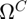, and the missing region, . The missing region is the part of the image that will be inpainted. The source region is the remainder of the image. A target patch, 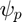, in the missing region will be selected and matched with candidate patches, 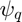, from the source region. An integer number, 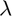, candidate patches will be filtered and used to inpaint the target patch. A new target patch is then located and this procedure is repeated until the missing region has been entirely inpainted.</p><p>The inpainting procedure may be divided into three main parts:</p><div><ol><li>Target Patch Selection</li><li>Candidate Patch Selection</li><li>Inpainting</li></ol></div><div><ul><li>Target Patch Selection</li></ul></div><p>The target patch is an <i>m x m</i> matrix whose centre pixel <i>p</i> will lie on the outer border, 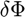, of the missing region. Target patch selection is performed based on a priority function, <i>P()</i>. <i>P()</i> is the product of a confidence term, <i>C()</i>, and a data term, <i>D()</i>. The confidence term is the ratio of known pixels to unknown pixels in the target region. The data term is the intensity-normalized dot product between the isophote vector and the normal vector at the centre pixel <i>p</i>. <i>P()</i> is calculated for every pixel along the outer border of the missing region. The patch  which maximizes the priority function is selected as the target patch.</p><p> </p><div><ul><li>Candidate Patch Selection</li></ul></div><p>Once the target patch is selected, a NLTS measure is used to determine the optimal candidate patches from the source region. Candidate patches are also of size <i>m x m</i>. The intensities 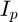 of the known regions of the target patch are compared element-wise against the intensities 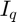 of potential candidate patches. A Gaussian weight  is used to prioritize closer matching between the centres 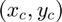 of the patches relative to the outer edges of the patches. <i>h</i> and  were selected empirically by Ding et al. to be 34 and in the range of [1.5, 2.5], respectively. The  images with highest NLTS scores are selected to be the candidate patches.</p><p> </p><div><ul><li>Inpainting</li></ul></div><p>Once the candidate patches are selected, an 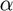-trimmed mean filter is applied to the set 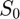 of candidate patches. The smoothed result is then used to inpaint the target region. -trimming removes the effects of outliers from biasing the mean.</p><p> </p><h2 id="3">Reproduction of Results</h2><div><ul><li>Data Source Preparation</li><li>Algorithm Implementation</li><li>Parameter Optimization</li></ul></div><h2 id="4">Reproduction of Results: Data Source Preparation</h2><p>All reproduction efforts were performed on 8-bit grayscale images. To replicate the methodology presented in "Image Inpainting Using Nonlocal Texture Matching and Nonlinear Filtering" by Ding et al., the image from Figure 14 of their paper was selected:</p><p>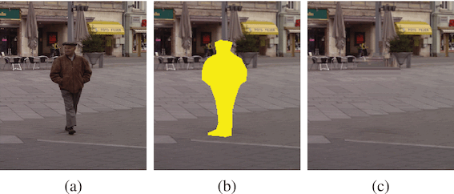 </p><p>All zero-valued pixels in the original image from Fig. 14(a) were set to 1. Recall that an 8-bit image is being used, so a value of 1 is very close to complete blackness. The mask from Fig. 14(b) was isolated and applied to the original image. The copying of the mask was not perfect and some manual tailoring of individual pixels was performed to ensure that the mask covers the entirety of the region intended for inpainting. All non-zero regions of the mask were used to set the original image to 0, thus dividing the image into a source region (non-zero values) and a missing region (zero-values). The input was then downsampled to relieve computational demand. Looking at the figure below: the top-left image is the original image; the top-right image is the mask (the white region is used to define the missing region); the bottom-left image is downsampled original image after application of the mask; the bottom-right image is the inpainted image.</p><p> </p><pre>The code used for preparing the input image, image_prep.m, is presented below.</pre><pre class="language-matlab">
<span class="comment">% Prepares the image for inpainting.</span>

downsample = true;
k = 1;

<span class="comment">% Read in the image from the paper and extract (a) and (b)</span>
f = imread(<span class="string">'full_image.gif'</span>);
a = f(5:695, 1:600);
b = f(5:695, 630:1229);

<span class="comment">% Define the missing region in (b) and use to filter (a)</span>
mask_val = b(293, 275);
M = (b == mask_val);
a(a==0) = 1;
a(M) = 0; <span class="comment">% not sure if this is required or not</span>

<span class="keyword">if</span> downsample
   <span class="comment">% resize</span>
   a = imresize(a, 0.25);
   <span class="comment">% fix regions that go to 0 outside of unknown region</span>
   xs = [34, 32, 33, 33, 38, 35, 40, 50, 52, 53, 56];
   ys = [17, 41, 53, 54, 14, 41,  9, 13, 13, 13, 41];
   a(xs, ys) = 1;
   <span class="comment">% add additional k pixels to unknown region to account for downsampling</span>
   <span class="keyword">for</span> i = 1:k
       mask = 1-(a==0);
       bound = bwperim(mask, 8);
       bound(1, :) = 0; bound(:, 1) = 0; bound(end, :) = 0; bound(:, end) = 0;
       a(a==0 | bound) = 0;
   <span class="keyword">end</span>
   M = (a==0);
<span class="keyword">end</span>

<span class="comment">% Set I (the working image)</span>
I = a;
<span class="comment">% Invert M to match the definition in the paper</span>
M = 1-M;

clear <span class="string">f</span> <span class="string">a</span> <span class="string">b</span> <span class="string">mask_val</span>;

</pre><h2 id="5">Reproduction of Results: Algorithm Implementation</h2><p>The algorithm was implemented as described in the Proposed Solution section of this report. A main function, main.m, is used to call all necessary functions.</p><pre class="language-matlab">
<span class="comment">% Main function for running the inpainting results for ECE417 final project</span>
<span class="comment">% by Thomas Akdeniz, Zameer Bharwani, and Kristoff Malejczuk.</span>

clc; clear <span class="string">all</span>; close <span class="string">all</span>

show_progress = false; <span class="comment">% whether to display the image after each iteration</span>
make_gif = false; <span class="comment">% whether to create gif (show_progress must also be true)</span>
filename = <span class="string">'iterations.gif'</span>;  <span class="comment">% gif filename</span>
pause_type = 3;
idx = 0; <span class="comment">% counter for gif</span>
<span class="comment">% 1 for 'timed', 2 for 'keypress', 3 for 'none'</span>

<span class="comment">% Define variables</span>
m = 11; <span class="comment">% dimension of image patches [5, 17]</span>
lambda = 5; <span class="comment">% number of candidate patches</span>
s = 2; <span class="comment">% Gaussian filter standard deviation [1.5, 2.5]</span>
max_i = 1000; <span class="comment">% maximum number of iterations for safety</span>
alph = 0.2; <span class="comment">% alpha value for alpha mean</span>

<span class="comment">% Run the image_prep script to obtain I and M</span>
image_prep2;
<span class="comment">% Cast I to double for calculations</span>
I = double(I);

<span class="comment">% While there are still unknown pixels...</span>
i = 0;
tic;
<span class="comment">% while sum(M == 0, 'all') &gt; 0</span>
<span class="keyword">while</span> sum(sum(M == 0)) &gt; 0
    <span class="comment">% Update iteration variable</span>
    i = i + 1;
    <span class="comment">% Compute the next target region</span>
    [xp, yp] = find_target_patch(I, M, m);
    <span class="comment">% Compute the canidate regions</span>
    [xq, yq] = find_can_patches(I, M, xp, yp, m, lambda, s);
    <span class="keyword">if</span> show_progress
        progress_update
    <span class="keyword">end</span>
    <span class="comment">% Inpaint the image</span>
    [I, M] = inpaint_target(I, M, xp, yp, xq, yq, m, alph);
    
    <span class="comment">% Safety check on max iterations</span>
    <span class="keyword">if</span> i &gt;= max_i
        disp(<span class="string">'Maximum iterations reached'</span>);
        <span class="keyword">break</span>
    <span class="keyword">end</span>
<span class="keyword">end</span>

fprintf(<span class="string">'Calculations completed after %d iterations and %d seconds.\n'</span>, i, toc);

hold <span class="string">off</span>
<span class="comment">% Cast image to uint8 for imshow</span>
I = uint8(I);
imshow(I);

<span class="comment">% add final image to gif (if gif was desired by user)</span>
<span class="keyword">if</span> show_progress
    <span class="keyword">if</span> make_gif
        frame = getframe(gcf);
        im = frame2im(frame);
        [A, map] = rgb2ind(im,256);
        imwrite(A, map, filename, <span class="string">'gif'</span>, <span class="string">'WriteMode'</span>, <span class="string">'append'</span>, <span class="string">'DelayTime'</span>, 2);
    <span class="keyword">end</span>
<span class="keyword">end</span>

</pre><p>The critical functions called by main.m are:</p><div><ul><li>image_prep.m</li><li>find_target_patch.m</li><li>find_can_patches.m</li><li>inpaint_target.m</li></ul></div><p>The first function call after image_prep.m (which has already been described in the Data Source Preparation section of this report) is find_target_patch.m. As expected, it computes the target patch by maximizing the priority function. It is shown below.</p><pre class="language-matlab">
<span class="keyword">function</span> [xp, yp] = find_target_patch(I,M,m)
<span class="comment">%FIND_TARGET_PATCH finds the next target patch</span>
<span class="comment">%</span>
<span class="comment">%   NOTE: ASSUMES MAX INTENSITY IS 255</span>
<span class="comment">%</span>
<span class="comment">%   Parameters</span>
<span class="comment">%   ----------</span>
<span class="comment">%   I : 2D array</span>
<span class="comment">%       A grayscale image with missing pixels as -1.</span>
<span class="comment">%   M : 2D array</span>
<span class="comment">%       A binary image the same size as I with 0 for missing pixels and 1</span>
<span class="comment">%       for known pixels.</span>
<span class="comment">%   m : int</span>
<span class="comment">%       The dimensions of the target patch.</span>
<span class="comment">%</span>
<span class="comment">%   Returns</span>
<span class="comment">%   -------</span>
<span class="comment">%   [xp, yp] : ints</span>
<span class="comment">%       The center point coordinates of the next target patch.</span>
Imax = 255;
offset = (m-1)/2;

<span class="comment">% Find the bounary d_phi</span>
d_psi = bwperim(M, 8);<span class="comment">% connectivity of 8 to match paper</span>
<span class="comment">% remove the incorrect bounary added by bwperim</span>
d_psi(1, :) = 0; d_psi(:, 1) = 0; d_psi(end, :) = 0; d_psi(:, end) = 0;

<span class="comment">% Create iteration list for d_phi and preallocate P</span>
[kx, ky] = find(d_psi);
P = zeros(length(kx), 1);

<span class="comment">% loop through points on d_phi</span>
<span class="keyword">for</span> i = 1:length(kx)
    x = kx(i); y = ky(i);
    <span class="comment">% Calculate confidence term using the mask</span>
<span class="comment">%     C = sum(M(x-offset:x+offset, y-offset:y+offset), 'all') / m^2;</span>
    C = sum(sum(M(x-offset:x+offset, y-offset:y+offset))) / m^2;
    <span class="comment">% Calculate data term</span>
    <span class="comment">% 1) calculate isophote vector</span>
    <span class="comment">% note the slightly different definition to match row,col indexing</span>
    IP = 1/(2*Imax) * [I(x-1,y)-I(x+1,y),I(x,y+1)-I(x,y-1)];
    <span class="comment">% 2) calculate n vector</span>
    n0 = [M(x,y+1)-M(x,y-1),M(x+1,y)-M(x-1,y)];
    <span class="keyword">if</span> isequal(n0, [0 0])
        n = [0 0];
    <span class="keyword">else</span>
        n = n0 / norm(n0);
    <span class="keyword">end</span>
    <span class="comment">% 3) Compute D</span>
    D = abs(dot(IP, n)) / Imax; 
    <span class="comment">% Calculate priority function and save</span>
    P(i) = C*D;
<span class="keyword">end</span>

<span class="comment">% Use argmax and determine coordinates of Pmax</span>
[~, arg] = max(P);
xp = kx(arg);
yp = ky(arg);

<span class="keyword">end</span>


</pre><p>The next function call is for find_can_patches.m. It uses the output of find_target_patch.m to locate the  most suitable candidate regions. The NLTS measure is used for this assessment. This code is shown below.</p><pre class="language-matlab">
<span class="keyword">function</span> [xq, yq] = find_can_patches(I, M, xp, yp, m, lambda, s)
<span class="comment">%FIND_CAN_PATCHES finds the associated candidate patches</span>
<span class="comment">%   Parameters</span>
<span class="comment">%   ----------</span>
<span class="comment">%   I : 2D array</span>
<span class="comment">%       A grayscale image with missing pixels as -1.</span>
<span class="comment">%   M : 2D array</span>
<span class="comment">%       A binary image the same size as I with 0 for missing pixels and 1</span>
<span class="comment">%       for known pixels.</span>
<span class="comment">%   [xp, yp] : ints</span>
<span class="comment">%       The pixel location of the center of the target patch</span>
<span class="comment">%   m : int</span>
<span class="comment">%       The dimensions of the target and candidate patches.</span>
<span class="comment">%   lambda : int</span>
<span class="comment">%       The number of candidate patches to return.</span>
<span class="comment">%   s : double</span>
<span class="comment">%       Gaussian filter standard deviation</span>
<span class="comment">%</span>
<span class="comment">%   Returns</span>
<span class="comment">%   -------</span>
<span class="comment">%   [xq, yq] : (1 x lambda) arrays</span>
<span class="comment">%       The center points the lambda candidate patches.</span>

<span class="comment">% Set the h value</span>
h = 34;
<span class="comment">% Determine center coordinates of target patch</span>
offset = (m-1)/2; <span class="comment">% calcualte offset from center of patch to edge</span>
Mp = M(xp-offset:xp+offset, yp-offset:yp+offset); <span class="comment">% M for target patch</span>
[xk, yk] = find(Mp); <span class="comment">% returns the indicies of all known pixels</span>
x1 = mean(xk); y1 = mean(yk); <span class="comment">% averaging for known center</span>
[xu, yu] = find(Mp==0); <span class="comment">% returns the indicies of all unknown pixels</span>
x0 = mean(xu); y0 = mean(yu); <span class="comment">% averaging for unknown center</span>
c = round([(x1+x0)/2, (y1+y0)/2]); <span class="comment">% geographic center of region</span>
xc = c(1); yc = c(2);

<span class="comment">% Calculate Gaussian filter for the target region</span>
[Y, X] = meshgrid(1:m, 1:m); <span class="comment">% generate mesh for vectorized Gaussian calc</span>
G = exp(-((X-xc).^2+(Y-yc).^2)/(2*s^2)); <span class="comment">% calculate G</span>

<span class="comment">% find image size and create arrays for the NLTS at each pixel and the</span>
<span class="comment">% center coords</span>
[r,c] = size(I);
scores = [];
coordinates_x = [];
coordinates_y = [];

<span class="comment">% Extract the target patch</span>
Ip = I(xp-offset:xp+offset, yp-offset:yp+offset);

<span class="keyword">for</span> cp_r = ceil(m/2):r-floor(m/2) <span class="comment">% cp_r = center pixel row co-ordinate of candidate patch. The bounds of the for loop ensure we have only full overlaps</span>
    <span class="keyword">for</span> cp_c = ceil(m/2):c-floor(m/2) <span class="comment">% cp_c = center pixel column co-ordinate of candidate patch. The bounds of the for loop ensure we have only full overlaps</span>
        Mc = M(cp_r-offset:cp_r+offset, cp_c-offset:cp_c+offset); <span class="comment">% extract M for the canidate region</span>
<span class="comment">%         if sum(Mc, 'all') == m^2 % making surepsi_Q intersect omega = empty set</span>
        <span class="keyword">if</span> sum(sum(Mc)) == m^2 <span class="comment">% making surepsi_Q intersect omega = empty set</span>
            <span class="comment">% Extract candidate patch</span>
            Iq = I(cp_r-offset:cp_r+offset, cp_c-offset:cp_c+offset);
            <span class="comment">% Set pixels within the unknown region to 0 to remove their contribution to the norm</span>
            Iq = Iq.*Mp;
            <span class="comment">% Calculate NLTS</span>
            NLTS = exp(-1*norm((Ip-Iq).^2 .* G, 1)/h^2);
            <span class="comment">% Save values in arrays</span>
            scores = [scores, NLTS]; 
            coordinates_x = [coordinates_x, cp_r];
            coordinates_y = [coordinates_y,cp_c];
        <span class="keyword">end</span>
    <span class="keyword">end</span>
<span class="keyword">end</span>

<span class="comment">% Use sort to extract the lambda largest values</span>
[~, sortIdx] = sort(scores,<span class="string">'descend'</span>);
coordinates_x = coordinates_x(sortIdx);
coordinates_y = coordinates_y(sortIdx);
xq = coordinates_x(1:lambda);
yq = coordinates_y(1:lambda);

<span class="keyword">end</span>


</pre><p>The first iteration is depicted below. The target region is indicated by the red square and the 5 candidate regions with highest NLTS measure are indicated by the blue squares.</p><p> </p><p>Once the target and candidate patches have been determined, inpaint_target.m applies the -trimmed mean filter is used to extract the average values of the candidate patches, which are then used to inpaint and fill the missing region. The code for inpaint_target.m is below.</p><pre class="language-matlab">
<span class="keyword">function</span> [I_out, M_out] = inpaint_target(I, M, xp, yp, xq, yq, m, alph)
<span class="comment">%INPAINT_TARGET inpaints the target patch using the candidate patches</span>
<span class="comment">%   Parameters</span>
<span class="comment">%   ----------</span>
<span class="comment">%   I : N x M array</span>
<span class="comment">%       A grayscale image with missing pixels as -1.</span>
<span class="comment">%   M : N x M array</span>
<span class="comment">%       A binary image the same size as I with 0 for missing pixels and 1</span>
<span class="comment">%       for known pixels.</span>
<span class="comment">%   [xq, yq] : ints</span>
<span class="comment">%       The pixel location of the center of the target patch.</span>
<span class="comment">%   [xq, yq] : (1 x lambda) arrays</span>
<span class="comment">%       The center points the lambda candidate patches.</span>
<span class="comment">%   m : int</span>
<span class="comment">%       The dimensions of the target and candidate patches.</span>
<span class="comment">%   alph : double</span>
<span class="comment">%       The alpha value for the alpha mean.</span>
<span class="comment">%</span>
<span class="comment">%   Returns</span>
<span class="comment">%   -------</span>
<span class="comment">%   I_Out : N x M array</span>
<span class="comment">%       The inpainted image results</span>
<span class="comment">%   M_out : N x M array</span>
<span class="comment">%       The updated mask showing which pixels have been inpainted</span>

l = length(xq); <span class="comment">% number of candidate patches</span>
offset = (m-1)/2; <span class="comment">% offset for indexing patches</span>
trim = floor(alph * l); <span class="comment">% alpha trim value for alpha mean</span>
<span class="comment">% extract the target patch region from M and I</span>
Mp = M(xp-offset:xp+offset, yp-offset:yp+offset);
Ip = I(xp-offset:xp+offset, yp-offset:yp+offset);

<span class="comment">% Create array of candidate patches (vectorize?)</span>
C = zeros(m, m, l);
<span class="keyword">for</span> j = 1:l
    C(:, :, j) = I(xq(j)-offset:xq(j)+offset, yq(j)-offset:yq(j)+offset);
<span class="keyword">end</span>

<span class="comment">% Sort and trim then find mean for alpha mean</span>
C = sort(C,3);
C = mean(C(:, :, trim:l-trim),3);

<span class="comment">% Compute the values masked for only the unknown region</span>
I(xp-offset:xp+offset, yp-offset:yp+offset) = round(C .* (1-Mp) + Ip .* Mp);
<span class="comment">% Update the mask</span>
M(xp-offset:xp+offset, yp-offset:yp+offset) = ones(m, m);

I_out = I;
M_out = M;

<span class="keyword">end</span>


</pre><p>Below is the progression of inpainting in gif format. Note that the gif updates every 2 seconds but will not repeat once it has completed its loop. If the reader desires to restart the gif, please refresh the page and scroll to this section. These results are for <i>m</i> = 11,  = 5,  = 0.2, and  = 1.5.</p><p> </p><h2 id="6">Reproduction of Results: Parameter Optimization</h2><p>There are multiple parameters that may be adjusted, and this report focuses on <i>m</i> - the edge-length of the target and candidate patches - and  - the number of images used for the -trimmed mean filter. Altering <i>m</i> has a large effect on the output. As the magnitude of m increases, inpainting occurs more rapidly because more pixels are inpainted in every iteration, but the more poorly-suited the candidate regions are. The number of iterations required scales loosely with the inverse of 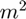.</p><p> </p><p>
<table border=1><tr><td><b>m</b></td><td><b>Number of iterations</b></td><td><b>Run Time (s)</b></td></tr>
<tr><td>5</td><td>392</td><td>95.6</td></tr>
<tr><td>9</td><td>111</td><td>22.4</td></tr>
<tr><td>13</td><td>57</td><td>10.7</td></tr>
<tr><td>17</td><td>35</td><td>6.4</td></tr></table>
</p><p>Adjusting  has a much smaller effect on the result, both in terms of a qualitative assessment of inpainting performance as well as in terms of computational time.</p><p> </p><p>
<table border=1><tr><td><b>&lambda;</b></td><td><b>Number of iterations</b></td><td><b>Run Time (s)</b></td></tr>
<tr><td>5</td><td>111</td><td>22.7</td></tr>
<tr><td>9</td><td>115</td><td>23.7</td></tr>
<tr><td>13</td><td>118</td><td>25.2</td></tr>
<tr><td>17</td><td>119</td><td>25.9</td></tr></table>
</p><h2 id="7">Extension to Other Images</h2><p>To extend beyond the results presented by Ding et al., a landscape photo was selected (top-left image). The tree in the photo was selected for removal by manually colouring all pixels to be removed as pure white. The white pixels were then selected to be the mask (top-right image) and the same procedures were followed as for the paper replication. The bottom-left image depicts the mask applied to a down-sampled version of the original image, and the bottom-right image is the result of image inpainting using <i>m</i> = 11,  = 5,  = 0.2, and  = 2.0. Empirically,  = 2.0 produced better results than  = 1.5 for this particular input image.</p><p> </p><p>The tree was able to be successfully removed from the image. The below gif shows the inpainting following each iteration. To view the gif from the beginning, please refresh the page and scroll.</p><p> </p><h2 id="8">Analysis and Conclusions</h2><p>The method proposed by Ding et al. was properly replicated and image inpainting was successfully achieved. Although a ghost of the removed object is observable in the inpainted images, it is possible to tune the algorithm parameters to minimize these irregularities. In particular, the size <i>m</i> of the target and candidate regions has the largest effect on both the quality of the inpainting, which was assessed qualitatively based on the presence of a ghost, as well as on the time required for the code to execute. Lower <i>m</i>'s result in greater inpainting quality but require more iterations to converge.</p><p>To quantitatively assess the optimal parameters, Ding et al. use peak signal to noise ratio and a structual similarity metric. To continue beyond the current reproduction efforts, a next step for the authors of this report would be to optimize the trade-off between image quality and algorithm speed by tuning the parameter <i>m</i> appropriately. Furthermore, the parameters  and <i>h</i> for candidate patch selection could be tuned to observe whether their optimal values match those reported by Ding et al. Overall, the novel inpainting method of a NLTS measure with pixel-wise intensity smoothing has been reproduced, tested, and validated.</p><h2 id="9">Source Files</h2><p>Main function: <a href="../main.m">../main.m</a></p><p>Prepare image for paper reproduction: <a href="../image_prep.m">../image_prep.m</a></p><p>Prepare image of tree: <a href="../image_prep2.m">../image_prep2.m</a></p><p>Locate target patch: <a href="../find_target_patch.m">../find_target_patch.m</a></p><p>Locate candidates patches: <a href="../find_can_patches.m">../find_can_patches.m</a></p><p>Inpaint target patch using candidate patches: <a href="../inpaint_target.m">../inpaint_target.m</a></p><p>Visualization of progress following each iteration: <a href="../progress_update.m">../progress_update.m</a></p><p>Create gif to visualize progress: <a href="../create_gif.m">../create_gif.m</a></p><p class="footer"><br><a href="http://www.mathworks.com/products/matlab/">Published with MATLAB&reg; R2017a</a><br></p></div><!--
##### SOURCE BEGIN #####
%% Image Inpainting Using Nonlocal Texture Matching and Nonlinear Filtering
% by Thomas Akdeniz, Zameer Bharwani, and Kristoff Malejczuk
%
%% Introduction
% 
% Image inpainting is a technique used to reconstruct images. It may be
% used for applications such as image restoration, object removal or error
% concealment. The success of image inpainting may be gauged from
% _consistency of intensity_ and _consistency of texture._ Two main
% categories of inpainting algorithms exist today: diffusion-based
% inpainting - which maximizes consistency of intensity - and patch-based
% inpainting - which maximizes consistency of texture. To optimize for both
% intensity and texture consistency in the inpainted image, variations on
% these algorithms have been proposed using a combination of the two
% aforementioned methods, neural networks, and nonlocal means filtering.
% Despite advancements in the field, inpainted images often appear visibly
% altered and there remains room for advancement towards obtaining even
% higher quality results.
% 
%% Proposed Solution
% 
% Ding et al. proposed a novel inpainting method in "Image Inpainting Using
% Nonlocal Texture Matching and Nonlinear Filtering," published in 2019 in
% the IEEE Transactions on Image Processing. This inpainting method is
% based on a nonlocal texture similarity (NLTS) measure and pixel-wise
% intensity smoothing. The image is divided into two regions: the source
% region, $\Omega ^C$, and the missing region, $\Omega$. The missing region
% is the part of the image that will be inpainted. The source region is the
% remainder of the image. A target patch, $\psi _p$, in the missing region
% will be selected and matched with candidate patches, $\psi _q$, from the
% source region. An integer number, $\lambda$, candidate patches will be
% filtered and used to inpaint the target patch. A new target patch is then
% located and this procedure is repeated until the missing region has been
% entirely inpainted.
%
% The inpainting procedure may be divided into three main parts:
% 
% # Target Patch Selection
% # Candidate Patch Selection
% # Inpainting
%
% * Target Patch Selection
% 
% The target patch is an _m x m_ matrix whose centre pixel _p_ will lie on
% the outer border, $\delta \Phi$, of the missing region. Target patch
% selection is performed based on a priority function, _P($\psi _p$)_.
% _P($\psi _p$)_ is the product of a confidence term, _C($\psi _p$)_, and a
% data term, _D($\psi _p$)_. The confidence term is the ratio of known
% pixels to unknown pixels in the target region. The data term is the
% intensity-normalized dot product between the isophote vector and the
% normal vector at the centre pixel _p_. _P($\psi _p$)_ is calculated for
% every pixel along the outer border of the missing region. The patch $\psi
% _p$ which maximizes the priority function is selected as the target
% patch.
% 
% <<patch_eq copy.png>>
% 
% * Candidate Patch Selection
%
% Once the target patch is selected, a NLTS measure is used to determine
% the optimal candidate patches from the source region. Candidate patches
% are also of size _m x m_. The intensities $I_p$ of the known regions of
% the target patch are compared element-wise against the intensities $I_q$
% of potential candidate patches. A Gaussian weight $G$ is used to
% prioritize closer matching between the centres $(x_c, y_c)$ of the
% patches relative to the outer edges of the patches. _h_ and $\sigma$ were
% selected empirically by Ding et al. to be 34 and in the range of [1.5,
% 2.5], respectively. The $\lambda$ images with highest NLTS
% scores are selected to be the candidate patches.
% 
% <<cand_eq copy.png>>
% 
% * Inpainting
% 
% Once the candidate patches are selected, an $\alpha$-trimmed mean filter
% is applied to the set $S_0$ of candidate patches. The smoothed result is then
% used to inpaint the target region. $\alpha$-trimming removes the effects
% of outliers from biasing the mean.
% 
% <<alpha_trimmed_filter copy.png>>
%
% 
%% Reproduction of Results
% * Data Source Preparation
% * Algorithm Implementation
% * Parameter Optimization
%
%% Reproduction of Results: Data Source Preparation
%
% All reproduction efforts were performed on 8-bit grayscale images. To
% replicate the methodology presented in "Image Inpainting Using Nonlocal
% Texture Matching and Nonlinear Filtering" by Ding et al., the image from
% Figure 14 of their paper was selected:
%
% <<full_image2.gif>>
%
% All zero-valued pixels in the original image from Fig. 14(a) were set to
% 1. Recall that an 8-bit image is being used, so a value of 1 is very
% close to complete blackness. The mask from Fig. 14(b) was isolated and
% applied to the original image. The copying of the mask was not perfect and some manual
% tailoring of individual pixels was performed to ensure that the mask
% covers the entirety of the region intended for inpainting. All non-zero
% regions of the mask were used to set the original image to 0, thus
% dividing the image into a source region (non-zero values) and a missing
% region (zero-values). The input was then downsampled to relieve
% computational demand.
% Looking at the figure below: the top-left image is the original image;
% the top-right image is the mask (the white region is used to define the
% missing region); the bottom-left image is downsampled original image
% after application of the mask; the bottom-right image is the inpainted
% image.
% 
% <<man_quad copy.PNG>>
% 
%  The code used for preparing the input image, image_prep.m, is presented below.
% 
% <include>image_prep.m</include>
% 
%% Reproduction of Results: Algorithm Implementation
% 
% The algorithm was implemented as described in the Proposed Solution
% section of this report. A main function, main.m, is used to call all
% necessary functions.
% 
% <include>main.m</include>
% 
% The critical functions called by main.m are:
%
% * image_prep.m
% * find_target_patch.m
% * find_can_patches.m
% * inpaint_target.m
% 
% The first function call after image_prep.m (which has already been
% described in the Data Source Preparation section of this report) is
% find_target_patch.m. As expected, it computes the target patch by
% maximizing the priority function. It is shown below.
% 
% <include>find_target_patch.m</include>
%
% The next function call is for find_can_patches.m. It uses the output of
% find_target_patch.m to locate the $\lambda$ most suitable candidate
% regions. The NLTS measure is used for this assessment. This code is shown
% below.
% 
% <include>find_can_patches.m</include>
% 
% The first iteration is depicted below. The target region is indicated by
% the red square and the 5 candidate regions with highest NLTS measure are
% indicated by the blue squares.
% 
% <<candidates copy.png>>
% 
% Once the target and candidate patches have been determined, inpaint_target.m applies the
% $\alpha$-trimmed mean filter is used to extract the average values of the
% candidate patches, which are then used to inpaint and fill the missing
% region. The code for inpaint_target.m is below.
% 
% <include>inpaint_target.m</include>
% 
% Below is the progression of inpainting in gif format. Note that the gif
% updates every 2 seconds but will not repeat once it has completed its
% loop. If the reader desires to restart the gif, please refresh the page
% and scroll to this section. These results are for _m_ = 11, $\lambda$ =
% 5, $\alpha$ = 0.2, and $\sigma$ = 1.5.
% 
% <<iterations_2.gif>>
%
%% Reproduction of Results: Parameter Optimization
% 
% There are multiple parameters that may be adjusted, and this report
% focuses on _m_ - the edge-length of the target and candidate patches -
% and $\lambda$ - the number of images used for the $\alpha$-trimmed mean
% filter. Altering _m_ has a large effect on the output. As the magnitude
% of m increases, inpainting occurs more rapidly because more pixels are
% inpainted in every iteration, but the more poorly-suited the candidate
% regions are. The number of iterations required scales loosely with the
% inverse of $m^2$.
% 
% <<m_comp copy.png>>
% 
% <html>
% <table border=1><tr><td><b>m</b></td><td><b>Number of iterations</b></td><td><b>Run Time (s)</b></td></tr>
% <tr><td>5</td><td>392</td><td>95.6</td></tr>
% <tr><td>9</td><td>111</td><td>22.4</td></tr>
% <tr><td>13</td><td>57</td><td>10.7</td></tr>
% <tr><td>17</td><td>35</td><td>6.4</td></tr></table>
% </html>
% 
% Adjusting $\lambda$ has a much smaller effect on the result, both in
% terms of a qualitative assessment of inpainting performance as well as in
% terms of computational time.
% 
% <<l_comp copy.png>>
% 
% <html>
% <table border=1><tr><td><b>&lambda;</b></td><td><b>Number of iterations</b></td><td><b>Run Time (s)</b></td></tr>
% <tr><td>5</td><td>111</td><td>22.7</td></tr>
% <tr><td>9</td><td>115</td><td>23.7</td></tr>
% <tr><td>13</td><td>118</td><td>25.2</td></tr>
% <tr><td>17</td><td>119</td><td>25.9</td></tr></table>
% </html>
%
%% Extension to Other Images
% 
% To extend beyond the results presented by Ding et al., a landscape photo
% was selected (top-left image). The tree in the photo was selected for
% removal by manually colouring all pixels to be removed as pure white. The
% white pixels were then selected to be the mask (top-right image) and the
% same procedures were followed as for the paper replication. The
% bottom-left image depicts the mask applied to a down-sampled version of
% the original image, and the bottom-right image is the result of image
% inpainting using _m_ = 11, $\lambda$ = 5, $\alpha$ = 0.2, and $\sigma$ =
% 2.0. Empirically, $\sigma$ = 2.0 produced better results than $\sigma$ =
% 1.5 for this particular input image.
% 
% <<tree_quad_good copy.png>>
% 
% The tree was able to be successfully removed from the image. The below
% gif shows the inpainting following each iteration. To view the gif from
% the beginning, please refresh the page and scroll.
% 
% <<iterations_2_tree.gif>>
%
%% Analysis and Conclusions
% 
% The method proposed by Ding et al. was properly replicated and image
% inpainting was successfully achieved. Although a ghost of the removed
% object is observable in the inpainted images, it is possible to tune the
% algorithm parameters to minimize these irregularities. In particular, the
% size _m_ of the target and candidate regions has the largest effect on
% both the quality of the inpainting, which was assessed qualitatively
% based on the presence of a ghost, as well as on the time required for the
% code to execute. Lower _m_'s result in greater inpainting quality but
% require more iterations to converge.
% 
% To quantitatively assess the optimal parameters, Ding et al. use peak
% signal to noise ratio and a structual similarity metric. To continue
% beyond the current reproduction efforts, a next step for the authors of
% this report would be to optimize the trade-off between image quality and
% algorithm speed by tuning the parameter _m_ appropriately. Furthermore,
% the parameters $\sigma$ and _h_ for candidate patch selection could be
% tuned to observe whether their optimal values match those reported by
% Ding et al. Overall, the novel inpainting method of a NLTS measure with
% pixel-wise intensity smoothing has been reproduced, tested, and
% validated.
%
%% Source Files
% 
% Main function:
% <../main.m>
% 
% Prepare image for paper reproduction:
% <../image_prep.m>
% 
% Prepare image of tree:
% <../image_prep2.m>
% 
% Locate target patch:
% <../find_target_patch.m>
% 
% Locate candidates patches:
% <../find_can_patches.m>
% 
% Inpaint target patch using candidate patches:
% <../inpaint_target.m>
% 
% Visualization of progress following each iteration:
% <../progress_update.m>
% 
% Create gif to visualize progress:
% <../create_gif.m>
% 
##### SOURCE END #####
--></body></html>